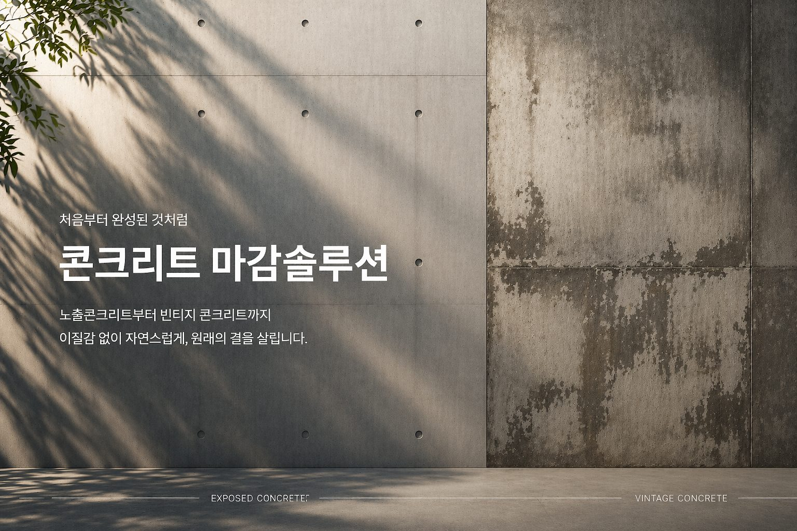
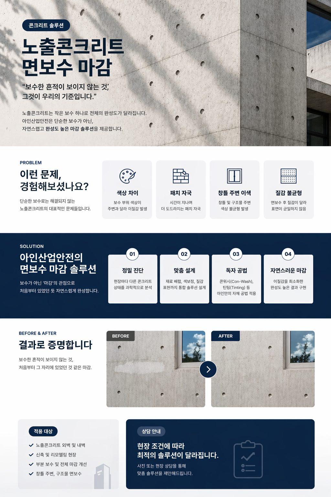
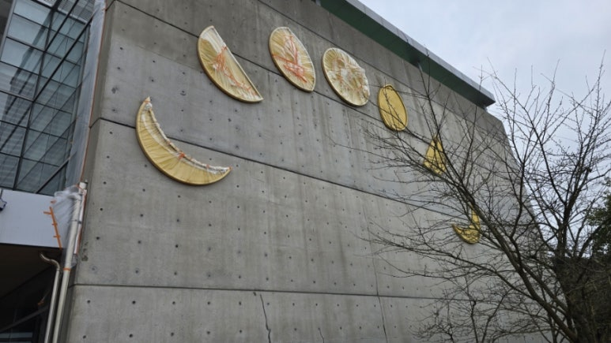

01
노출콘크리트 면보수
SURFACE REPAIR
표면 전체의 상태를 읽고 결함을 정리한 뒤, 인접 면과 같은 인상으로 되돌립니다. 부분 보수보다 면 단위로 계획할 때 결과가 안정적입니다.

주식회사 아인산업안전 · 제주특별자치도 서귀포시
EXPOSED CONCRETE
덧칠로 가릴 수 없기에, 보수의 기준이 다릅니다.
노출콘크리트는 타설 순간의 결과가 그대로 외관이 됩니다. 곰보 하나, 층조인트 한 줄이 건물 전체의 인상을 바꿉니다. 아인산업안전은 결함을 덮는 대신, 주변 면의 질감과 색을 읽어 다시 만들어 넣는 방식으로 보수합니다.
해풍과 잦은 강우라는 제주의 조건은 육지와 다른 열화 양상을 만듭니다. 같은 균열이라도 원인이 다르면 공법이 달라져야 합니다. 현장 확인에서 시작해 공법을 제안하고, 건축기술자가 직접 검토한 계획으로 시공합니다.

TECHNOLOGY
결함의 종류마다 재료와 손질 방법이 다릅니다. 제주 현장에서 다루는 여섯 가지 기술입니다.

01
SURFACE REPAIR
표면 전체의 상태를 읽고 결함을 정리한 뒤, 인접 면과 같은 인상으로 되돌립니다. 부분 보수보다 면 단위로 계획할 때 결과가 안정적입니다.
02
HONEYCOMB & AIR POCKET
곰보는 다짐 부족, 기포는 거푸집과 공기의 문제로 원인이 다릅니다. 원인에 맞춰 충전 깊이와 재료를 나누고, 얇게 여러 번 채웁니다.

03
JOINT LEVELING
층조인트는 건물의 수평선을 결정합니다. 먹줄과 레이저로 기준선을 잡고 한 층 전체를 기준으로 정리합니다.

04
COLOR & TEXTURE
조색은 현장에서, 건조 후 상태를 기준으로 합니다. 폼타이 자국과 거푸집 결까지 같은 밀도로 재현해야 보수 부위가 드러나지 않습니다.

05
CRACK REPAIR
폭보다 중요한 것은 거동 여부입니다. 움직이는 균열은 탄성 재료로, 정지한 균열은 주입과 충전으로 처리합니다.

06
WATER REPELLENT
해안가 현장일수록 표면 보호가 수명을 좌우합니다. 통기성을 막지 않으면서 수분과 염분의 침투를 늦춥니다.
BEFORE / AFTER
손잡이를 좌우로 움직이면 보수 전후를 비교할 수 있습니다.


BEFORE AFTERWHY AIN
01
제주시와 서귀포시, 성산·애월 등 읍면 지역까지 직접 이동해 확인합니다. 사진만으로 판단하지 않고 현장에서 상태를 봅니다.
02
염분과 높은 습도는 재료의 양생과 색 발현에 영향을 줍니다. 육지 기준을 그대로 적용하지 않고 제주 환경에 맞춰 조정합니다.
03
결함의 원인을 먼저 정리한 뒤 공법을 제안합니다. 왜 이 방법인지 설명할 수 없는 시공은 하지 않습니다.
04
같은 벽면에서도 위치에 따라 색이 다릅니다. 평균값이 아니라 인접 면을 기준으로 맞춥니다.
05
표면 보수와 방수, 안전시설물 설치를 한 계획으로 묶어 가설 비용과 공기를 함께 줄입니다.
RELATED FIELDS
표면 보수만으로 끝나지 않는 현장이 있습니다. 물길을 막고, 사용하는 사람의 안전까지 이어서 시공합니다.

CHANNELS
시공 브랜드(홈페이지)와 자재 판매(온라인몰)의 역할을 분리해 운영합니다.
CONTACT
현장사진을 보내주시면 적합한 보수 방향을 검토해드립니다.